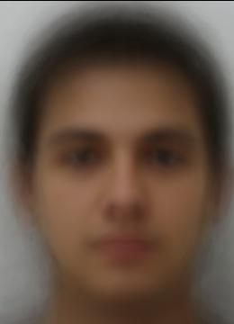
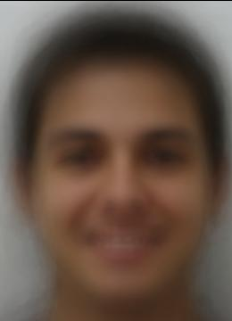
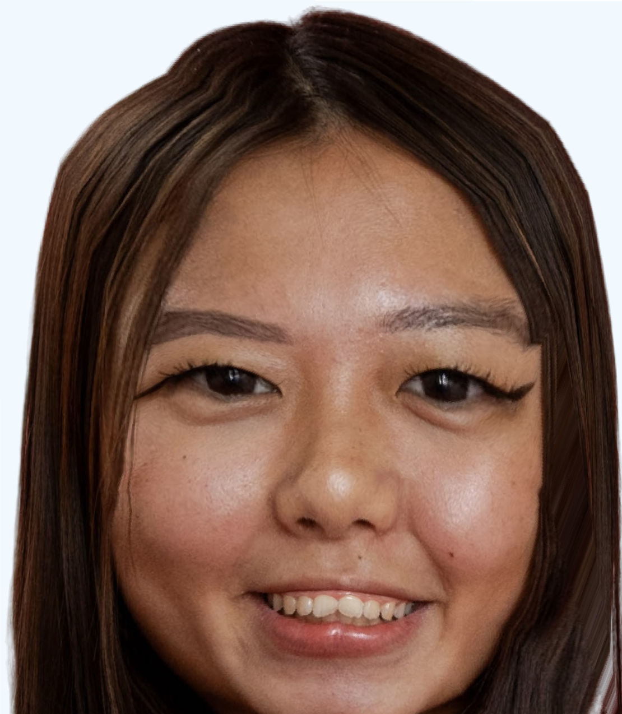
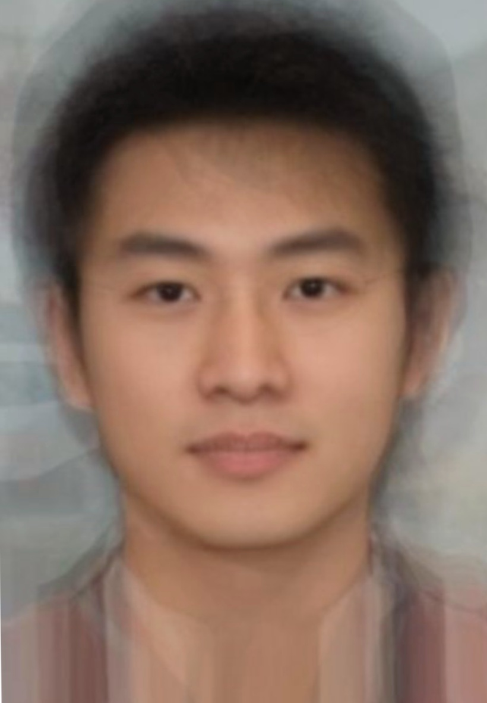
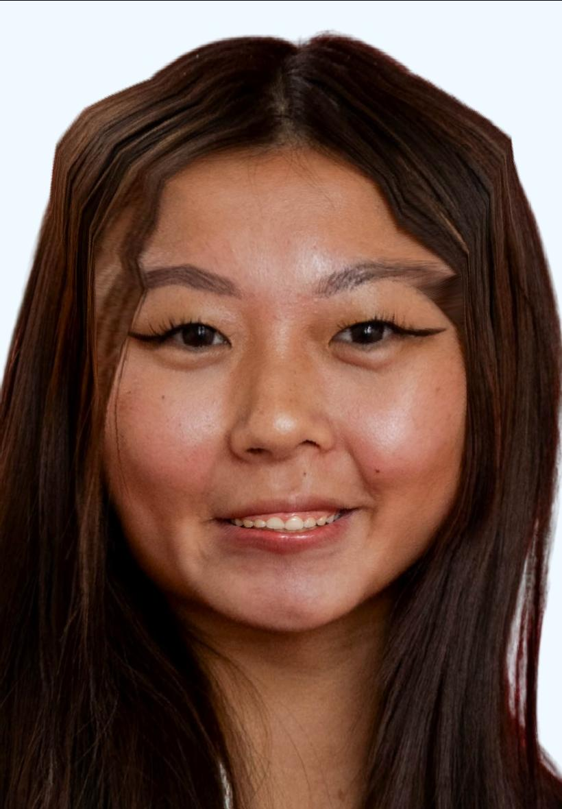
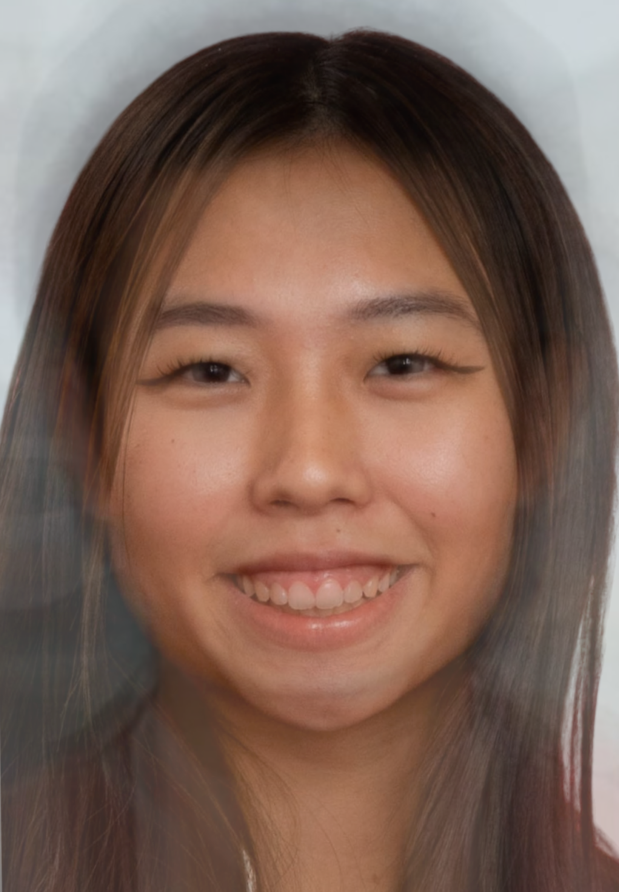
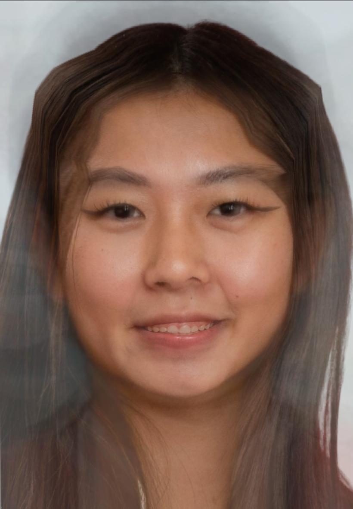

Introduction
In this project, I manually selected correspondences between images and applied Delaunay triangulation, affine transformations, and cross-dissolving techniques to warp faces into the shapes of other faces, as well as to generate morph animations between them. Additionally, I computed the average face of a population and used it to extrapolate and create caricatures.
Part 1: Defining Correspondences
Methodology
First, I cropped and resized an image of myself and my friend Mckenzie to ensure both had the same dimensions, with our faces matching in size and aspect ratio. Using the provided correspondance tool, I selected 58 correspondence points for each image including the four corners to make sure that all triangles were created. Then I generated a Delaunay triangulation based on the average of the two sets of correspondence points.
Part 2: Computing the Mid-Way Face
Blurred Finite Difference
To compute the mid-way face between me and Mckenzie, I followed
these steps:
1. Calculated the average shape by taking the midpoint of the
corresponding points
2. Computed the inverse of the affine transformation matrix for
each triangle, mapping the original triangles in both images to
the corresponding triangles in the average shape.
3. Applied inverse warping using a polygon mask for all the
pixels.
Then I cross-dissolved the warped images by averaging them
together.
My original image
Midway
Mckenzie's original image
Part 3: The Morph Sequence
Using Part 2 and varying the weights between 0 and 1, I created a morph sequence consisting of 56 frames.

Part 4: The Mean Face of a population
To compute the mean face of a population, I took the FEI
database for Brazilian faces and used the images of a straight
face to try and find the average face. To find the average face,
I followed these steps:
1. Calculated the average shape by taking the mean of all
corresponding points.
2. Warped each face to fit this average shape.
3. Compute the mean face by averaging the colors of all the
warped faces.
Below are examples of faces from the dataset that have been
warped to the average shape
1: straight face morph
5: straight face morph
6: straight face morph
1: smiling face morph
5: smiling face morph
6: smiling face morph
Average straight face
Average smiling face
Here is my face warped into the average geometry, and the average face warped into my face’s geometry.
My face warped
Average face warped
Part 5: Caricatures & Extrapolating From the Mean
Using the FEI database population means, we can create
caricatures by extrapolating facial features. I used
p=0.5 to create the caricature meaning it is
halfway between two sets of facial correspondences
Bells & Whistles
For my initial enhancements, I transformed my features with
that of an average Chinese male face that I sourced online.
The process began with rescaling and resizing both images to
ensure compatibility, followed by selecting corresponding
points between them. I then explored three distinct morphing
techniques:
1. Warp: Matching the structure of the two faces
2. Cross-Dissolve: Matching the appearance of the two faces
3. Warp and Cross-Dissolve: Matching the structure and
appearance of the two faces
Me
Average chinese male
Warp
Cross-Dissolve
Warp and Cross-Dissolve
